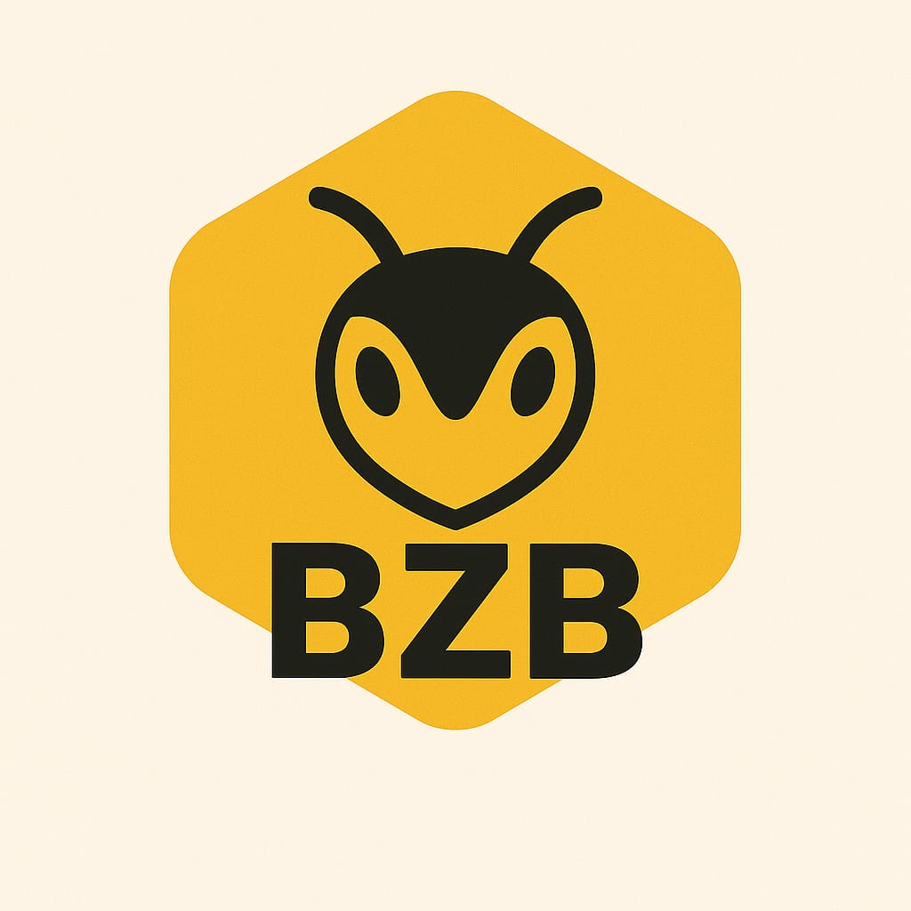
סיכום הפרויקט BZB (Busy Bee)
סיכום של כל מה שנבנה, תוקן ונבדק באפליקציה, בשפה פשוטה.
1הקמה ועיצוב ראשוני
פברואר עד מרץ 2026
- הקמת תשתית האפליקציה ומסכי הבסיס.
- עיצוב מחדש של המותג: לוגו BZB, סגנון צעיר ודינמי, ואייקון דבורה.
- מסך משימות, לוח משימות, ומסך צ'אט למשימות.
- הוספת מפה ראשונה ללוח ההורים.
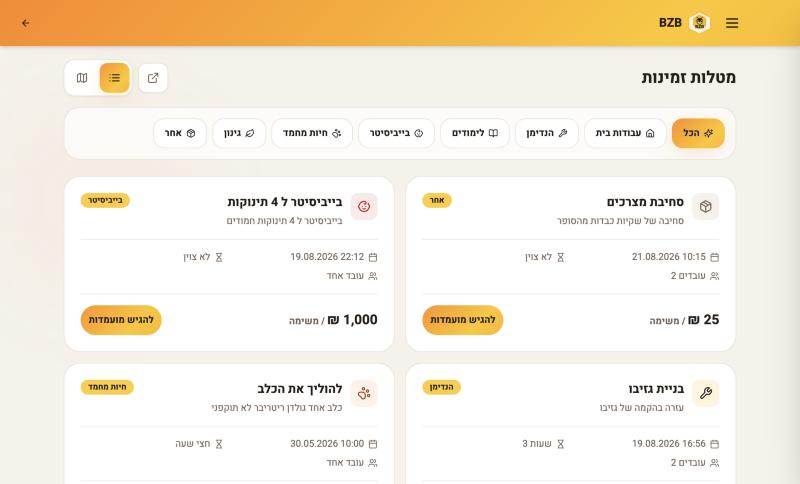
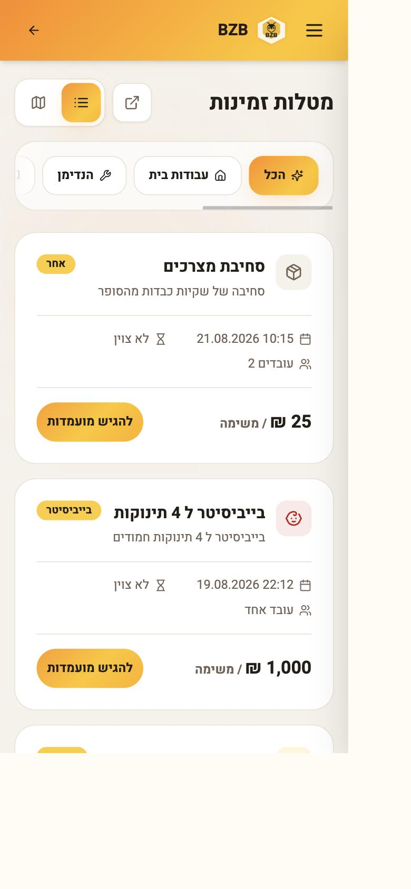
2חיבור לשרת אמיתי
סוף מרץ 2026
- חיבור האפליקציה לבסיס נתונים, הרשמה וכניסה אמיתיות.
- בדיקת הרשמה מקצה לקצה.
- מסכי ניהול פרופיל ותמונת פרופיל.
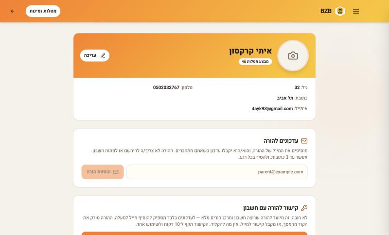
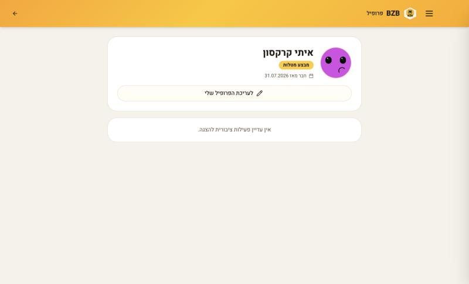
3ניווט וחוויית משתמש
מרץ עד אוגוסט 2026
- תפריט צד (מגירה) לנייד ולמחשב, שיפור כפתורי החזרה, וניווט מתוקן לכל המסכים.
- תמיכה מלאה בעברית ובכיוון מימין לשמאל (RTL).
- פונט Heebo לכל האתר.
- מסך הפתיחה נפתח תמיד מלמעלה.
- מסך הרשמה חדש ומסודר.
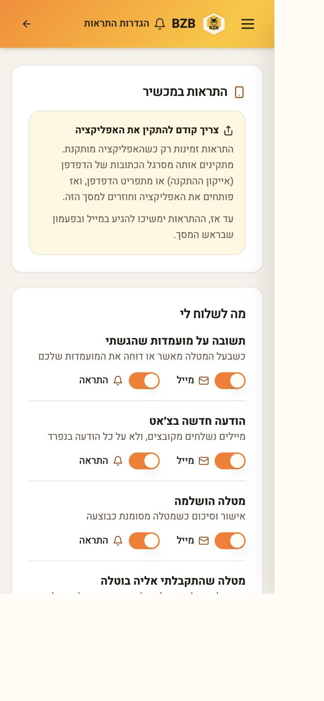
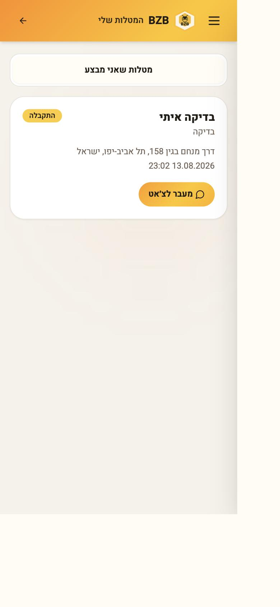
4הרשאות ותפקידים
אפריל 2026 ואוגוסט 2026
- הפרדה בין מציעים (דבורים) למבקשים (מפרסמים/הורים).
- הגבלת פעולת "החל" למשימה לדבורים מחוברות בלבד.
- צ'אט נפתח רק אחרי שמשימה אושרה.
- ניהול מסכים לפי תפקיד, וניהול תפקידים עם מעבר בין מציע למבקש.
5מפות וכתובות
אפריל עד אוגוסט 2026
- שילוב Google Maps בעברית.
- בחירת כתובת במפה, והמרת כתובת לקואורדינטות (geocoding).
- ניווט ישיר למשימה דרך Google Maps או Waze.
- הצגת משימות בתצוגת מפה.
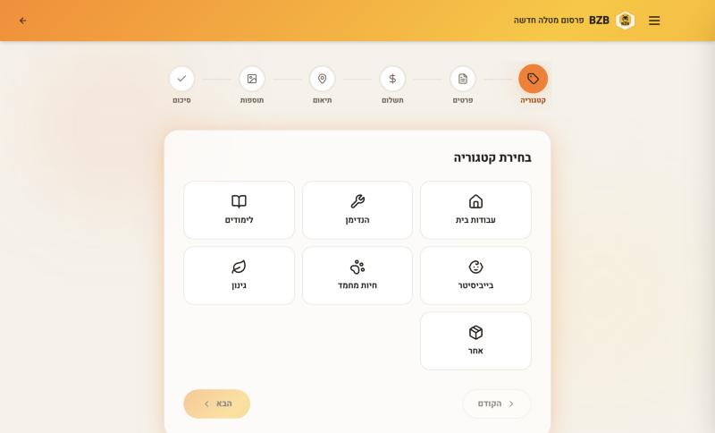
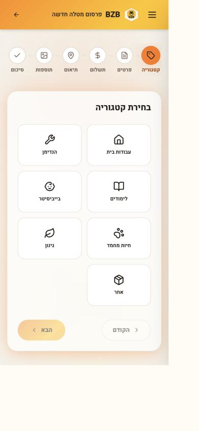
6משימות
אפריל עד אוקטובר 2026
- הזנת משך משימה (בימים), תאריך, שעה ומספר עובדים נדרשים.
- טיוטות משימה ושמירה לפני פרסום.
- עריכה, ביטול, ומחיקה רכה (ארכיון).
- סימון משימה כהושלמה.
- דירוגים וביקורות לאחר משימה.
- העלאת תמונות למשימה.
- בחירה מהירה של תאריך ושעה, ובחירת שעה במרווחים של 5 דקות.
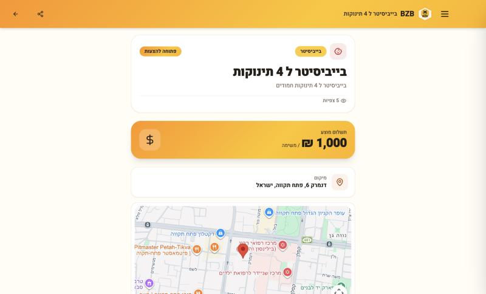
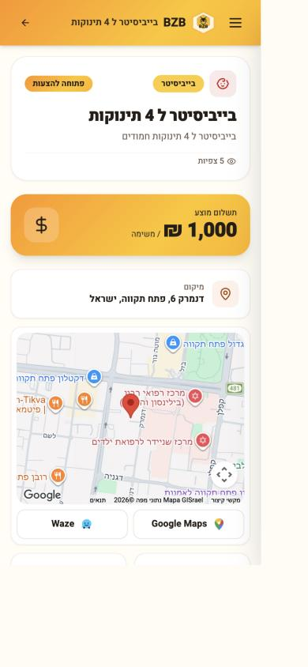
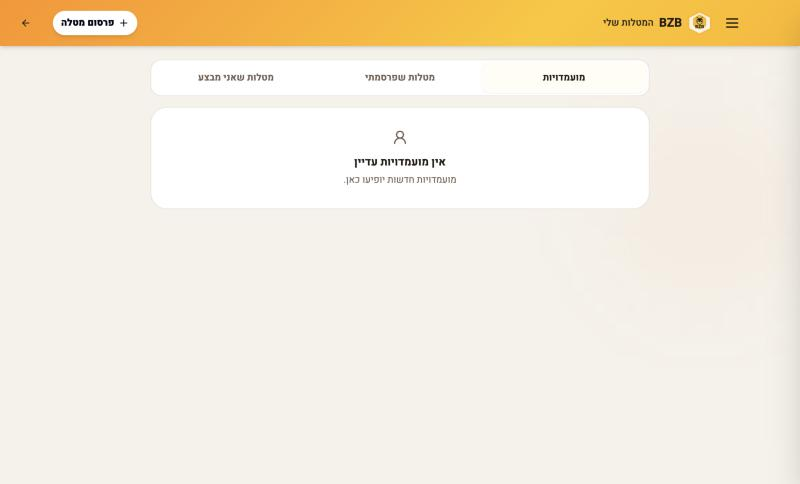
7התראות ותקשורת
אוגוסט 2026
- התראות במייל וגם התראות דחיפה (Web Push) לטלפון.
- "שעות שקטות": איסוף ההודעות לסיכום במקום התראה בכל רגע.
- התקנת האפליקציה כ-PWA במכשיר, כולל אייקון ייעודי.
- חיבור מחדש אוטומטי לצ'אט ולהתראות אחרי ניתוק.
- שליחת הודעות קוליות ותמונות בצ'אט.
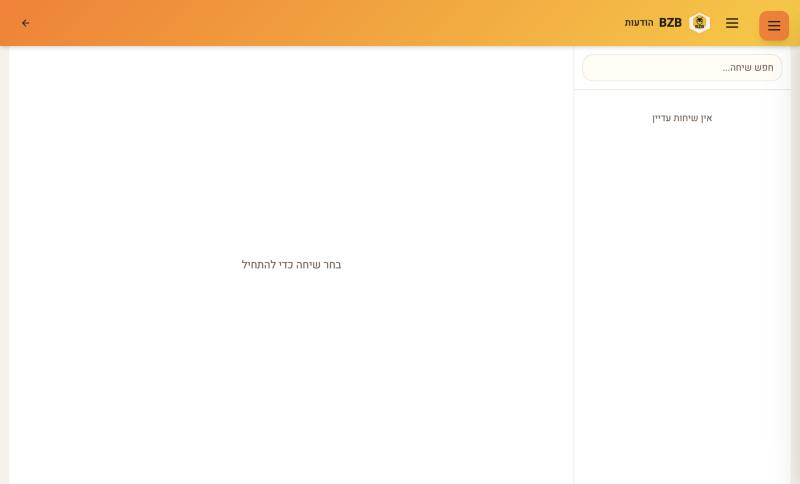
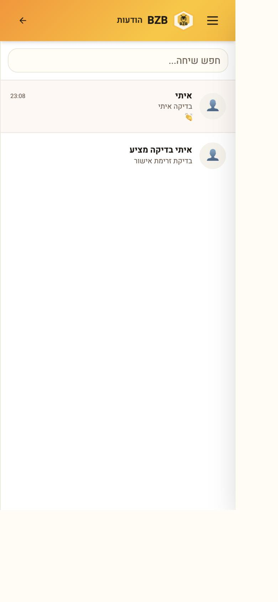
8הורים
מרץ עד אוגוסט 2026
- תצוגת הורה לקריאה בלבד באמצעות קישור שיתוף.
- חיבור הורה לילד באמצעות QR או קישור, במקום קוד בן 6 ספרות.
- הורים יכולים לקבל עדכונים ולנהל העדפות מייל בלי לפתוח חשבון.
- אפשרות להורה לבקש מנוי.
9מערכת ניהול (אדמין)
יולי עד אוקטובר 2026
- לוח בקרה עם אפשרות לפירוט (drill-down).
- ניהול משתמשים: חיפוש, בחירה מרובה ומחיקה מרובה.
- אישור הרשמות ואישור כתובות מייל.
- איפוס סיסמה.
- אישור והסרה של קישורי הורה-ילד.
- יומן פעולות של מנהלים ומשתמשים.
- ניהול מחירי מנויים ועמלות, בלי ערכים קשיחים בקוד.
- מסך סירוב לחודש חינם.
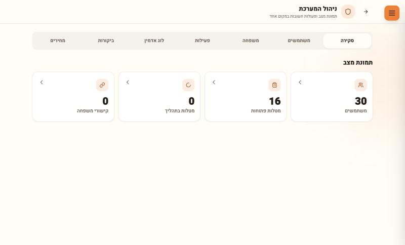
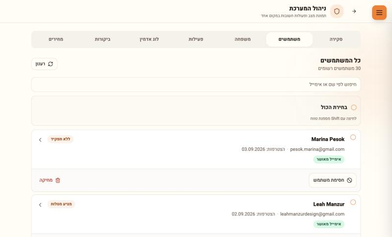
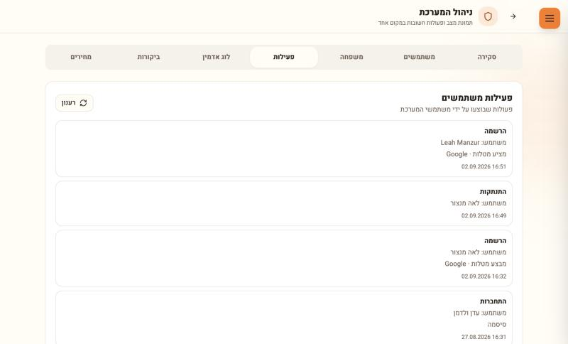
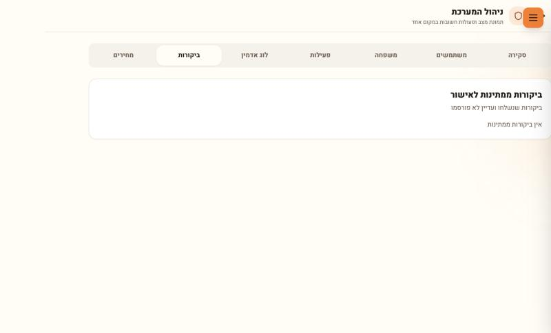
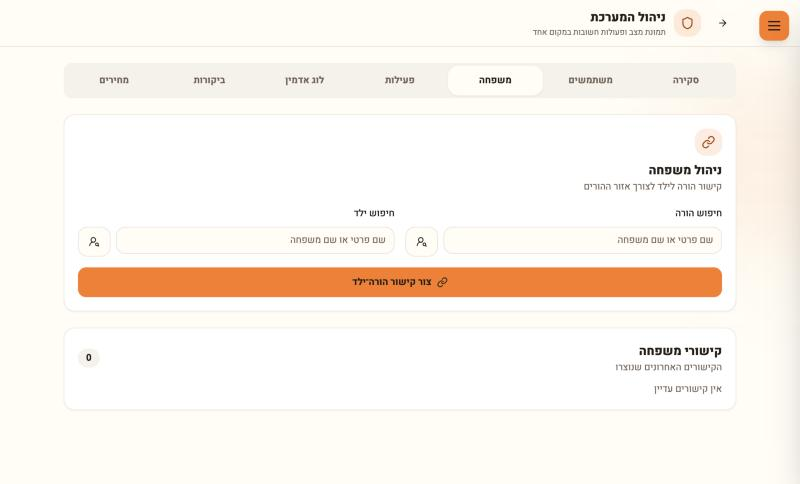
10אבטחה ופרטיות
אוגוסט עד אוקטובר 2026
- ביקורת אבטחה ותיקון הממצאים שנמצאו.
- הקשחת הרשאות לבסיס הנתונים, הגבלת מתקשרים פנימיים, ואכיפת הרשאות על דירוגים.
- עדכון ספריות תוכנה עם פרצות ידועות.
- הגנות CORS ו-CSP, כולל אישור Google Maps ו-Supabase.
- עמידה בתיקון 13 לחוק הגנת הפרטיות ובתקנות GDPR.
- מחיקת חשבון עם שמירת רשומות תשלום לתקופה הנדרשת, והסרת פרטי כרטיס האשראי.
- מניעת הרשמה כפולה דרך כתובות Gmail עם נקודות או +.
- כללי חוזק סיסמה, ואישור נוסף לכניסה עם Google.
- תיקון נגישות לפי תקן WCAG 2.2 AA.
11מיילים והתחברות
יולי עד אוגוסט 2026
- שליחת מיילים דרך Resend, כולל איפוס סיסמה ואימות.
- כניסה עם Google, כולל טיפול בכשלים ובהתנתקות ישנה.
- ניתוב נכון למשתמשים מחוברים.
12תשלומים (Cardcom)
ספטמבר עד אוקטובר 2026
- מנויים: חודשי, רבעוני ושנתי, עם חיוב חוזר אוטומטי, שדרוג, שינוי תוכנית מתוזמן, וביטול.
- החזרים: החזר מלא בתוך 14 יום, החזרים לשדרוג, והחזר אוטומטי כשמשימה נמחקת או נדחית.
- חיוב לפי משימה: משימה ראשונה חינם, אישור תשלום לפני פרסום, ותשלום חד-פעמי בכרטיס, בארנק או ב-Bit.
- חודש חינם: אחד לכל אדם, גם עם חשבונות שנמחקו או כתובות מייל חלופיות.
- בדיקת כרטיס J5: חיוב סמלי לאימות כרטיס לפני חודש חינם.
- כרטיסים שנדחו: לא מנסים שוב, וקוד דחייה קשיח מוגדר.
- חשבוניות: קישור לחשבונית שהופקה, ותצוגת היסטוריית תשלומים כולל עמלות ושינויי תוכנית.
- תשלומים בתהליך: שחזור אוטומטי של סשן תשלום שנקטע.
- בדיקות: נבדק קודם בסביבת הבדיקה של Cardcom, ואחר כך בטרמינל אמיתי. התוצאות מתועדות בפירוט.
- מתג כיבוי: אפשרות לכבות את החיוב בכל רגע.
- Apple Pay: קובץ אימות דומיין והגדרת לוגו.
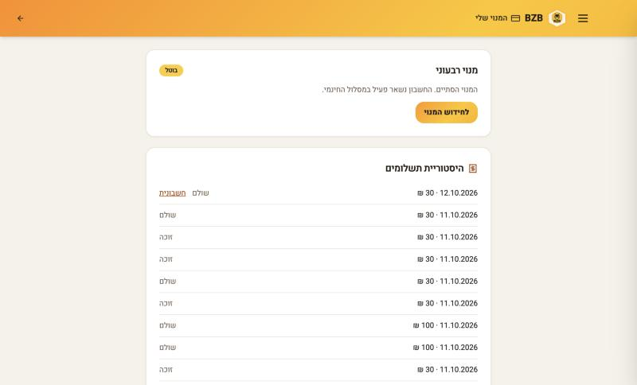
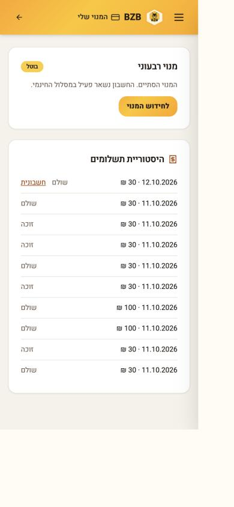
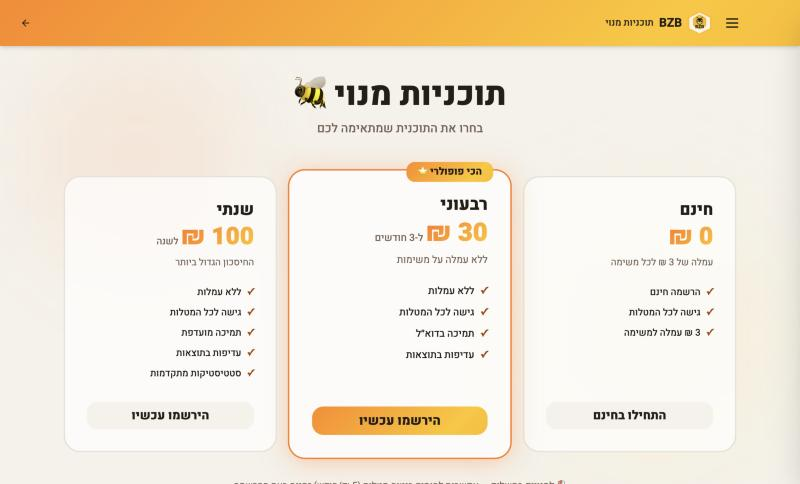
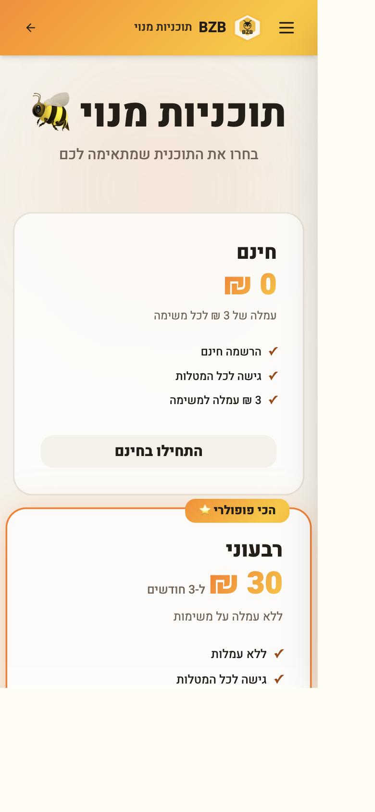
13מחירים ועמלות
אוקטובר 2026
- מחירי מנויים ועמלות משימה מנוהלים מאדמין, עם היסטוריה, וחתימה על כל שינוי.
- תצוגת מחירים באגורות.
- כל מסך מציג את המחיר הנוכחי מהמערכת.
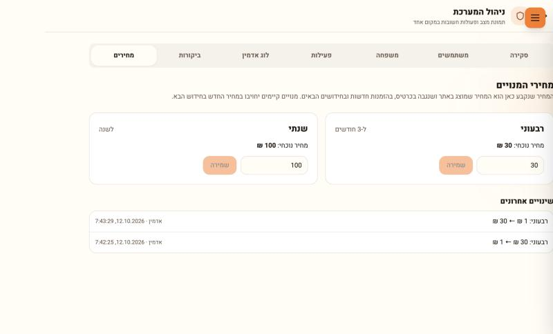
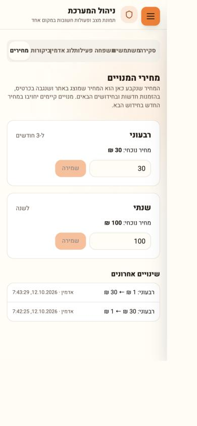
14פריסה ותשתית
מרץ עד אוקטובר 2026
- פריסה ל-Vercel, כולל ניתוב נכון לכל הנתיבים.
- פרויקט Supabase ייעודי ל-BZB, מיגרציות, ועדכון טיפוסי הנתונים.
- פונקציות שרת (Edge Functions) לגיאוקודינג, חיובים, webhooks ומשימות מתוזמנות (cron).
- תיעוד גיבוי ושחזור, ומגבלות קצב לכניסה.
- ניקוי קוד שלא בשימוש, ותיקון בדיקות טיפוסים (typecheck).
- בדיקות אוטומטיות מקצה לקצה (Playwright).
15תיעוד והכנה לשחרור
אוגוסט עד אוקטובר 2026
- מסמך שאלות ללקוח בשפה פשוטה.
- טבלת מצבי תשלום.
- סיכום עברי של בדיקות התשלום.
- דוחות בדיקות QA ורשימת משימות פתוחות.
- רשימת אימותים לפני שחרור לאוויר.
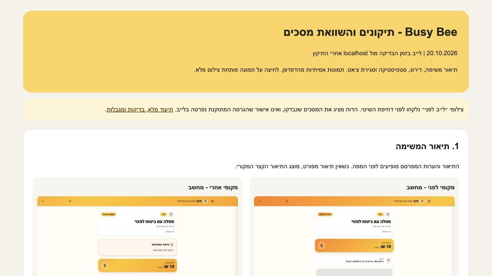
הסיכום מבוסס על היסטוריית הגיט בלבד ועל קבצי התיעוד בתיקיית הפרויקט.
צילומי המסך לקוחים מהתיעוד של הפרויקט (docs/live-screenshots) ומהדוחות שבתיקיית public/reports.